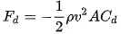

Optakt Record Della’Ora: Eddy Merckx il Modello Bianco.

Squadra Moltenis unge håb Joop Thiemers banestål er en italiensk Guerciotti. Den er smedet i en grotte lidt syd for Milano af en mand med kraftig hårvækst. Den oser af rå kraft og høj fart. Vi præsenterer her Eddy Merckx il Modello Bianco. 
Til Record della Ora™ er Joop Thiemers banestål blevet decaltunet med specialfremstillede Eddy Merckx bogstaver, der ifølge Frankfurter Institut Für Aerodynamiks beregninger skulle give en markant nedsat vindmodstand. Så nedsat, at de har været i stand til at måle det:

Beppe Thiemers polske soigneur har limet et sæt Vittoria Pista Elite ringe på de gamle Fiamme fælge med nænsomme, ja da Vinci-agtige penselsstrøg i urets retning for bedre kraftoverførsel.
Der køres med 53 tænder på Campagnolo garnituren forrest og bagpå sidder 16T.
Nav: Campagnolo Record højflange
Styrfittings: Campagnolo
Frempind og styr: 3ttt med fræk italiener panto (Ceccarelli v. – er en hemmelig lægeforbindelse vi har omkring Palermo)
Sadel: en gammel slidt Rolls.